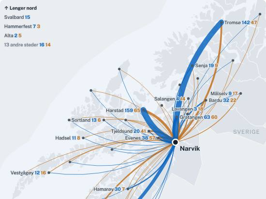
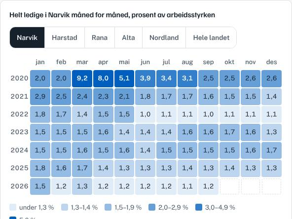
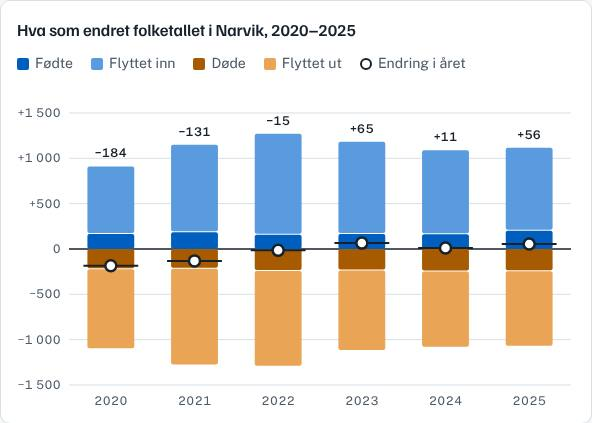
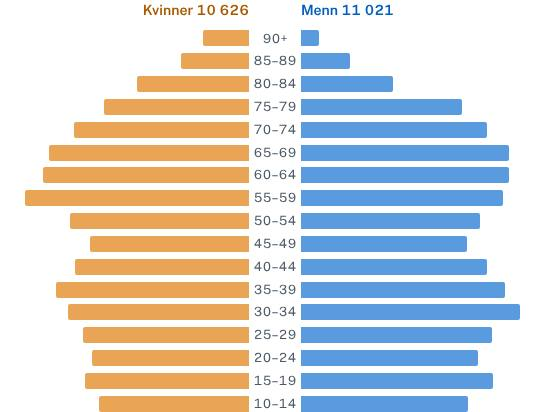
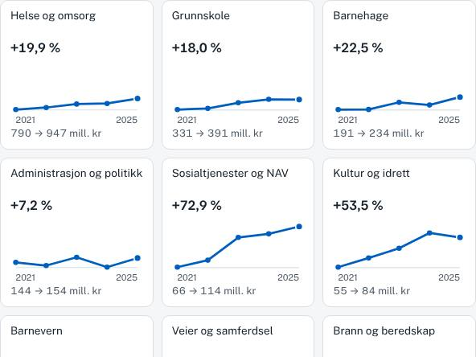
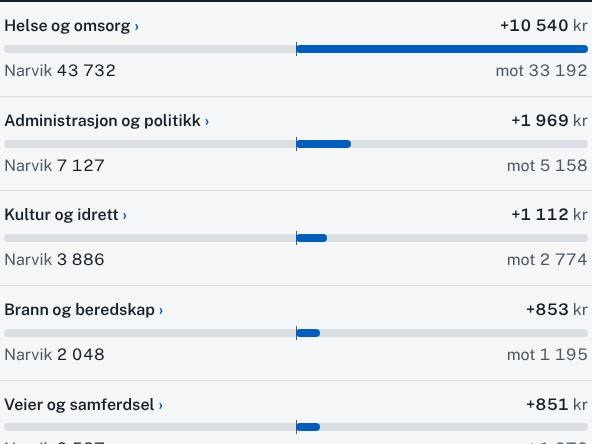

21 647 innbyggere 1. januar 2026
Her finner du regnskap og budsjett, befolkning, bolig, arbeid og næringsliv i Narvik kommune, sammenlignet med lignende kommuner. Hvert tall har lenke til kilden.
Tre spørsmål om Narvik. Velg et svar, så får du det riktige tallet og hvor det kommer fra.
Faktaark om saker mange i Narvik snakker om, med vedtak, datoer og tall fra kommunens egne dokumenter og andre offentlige kilder.
Kart og grafer fra sidene. Trykk på et bilde for å se det med tallene og kildene.






Nye sider, kart, grafer og tall fra kommunens dokumenter. Tallene fra SSB, Nav og Brønnøysundregistrene oppdateres hver uke og står ikke her.